01 / 30
Naruto
2002 · 220 episodios
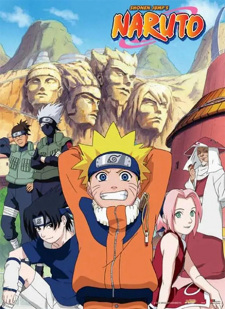
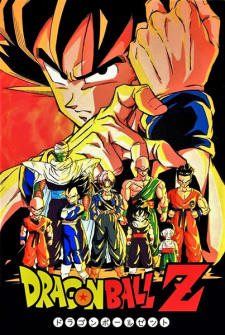
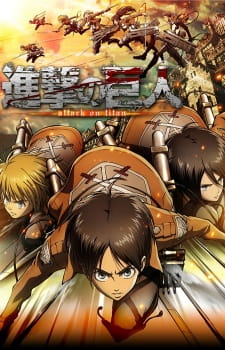
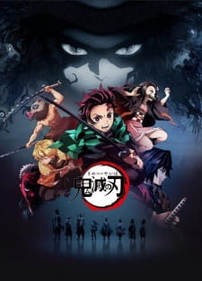
De la aldea de Konoha a la batalla por la humanidad. Descubre las portadas de tus historias favoritas en una colección llena de aventura.
Explorar la colección Naruto · Dragon Ball Z · Shingeki no Kyojin · Kimetsu no Yaiba2002 · 220 episodios
1989 · 291 episodios
2013 · 25 episodios
2019 · 26 episodios
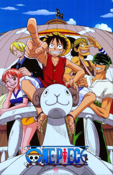
AVENTURA1999 · 1168 episodios
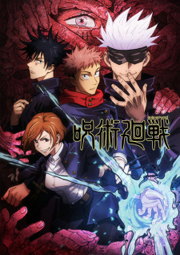
SOBRENATURAL2020 · 24 episodios
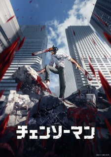
ACCIÓN2022 · 12 episodios
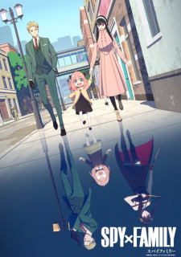
COMEDIA2022 · 12 episodios
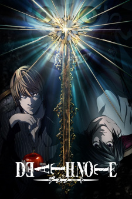
SUSPENSO2006 · 37 episodios
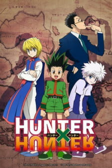
AVENTURA2011 · 148 episodios
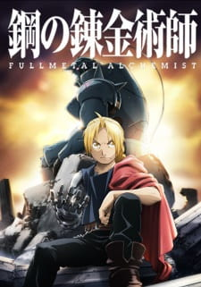
FANTASÍA2009 · 64 episodios
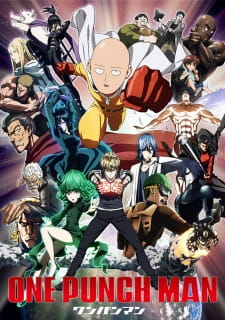
SUPERHÉROES2015 · 12 episodios
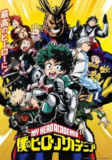
SUPERHÉROES2016 · 13 episodios
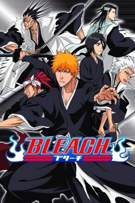
SOBRENATURAL2004 · 366 episodios
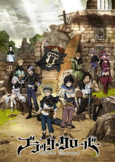
MAGIA2017 · 170 episodios
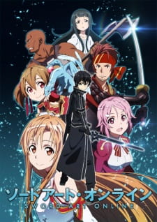
MUNDO VIRTUAL2012 · 25 episodios
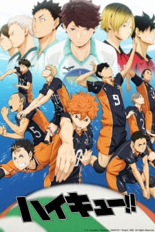
DEPORTES2014 · 25 episodios
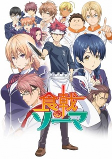
COCINA2015 · 24 episodios
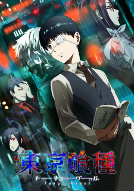
FANTASÍA OSCURA2014 · 12 episodios
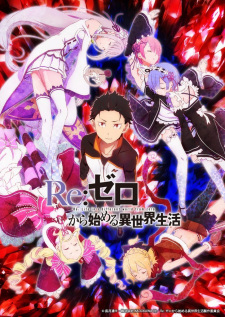
ISEKAI2016 · 25 episodios
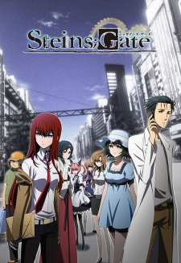
CIENCIA FICCIÓN2011 · 24 episodios
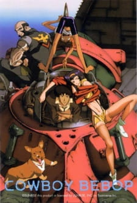
ESPACIO1998 · 26 episodios
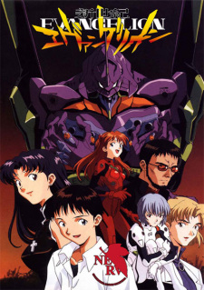
MECHA1995 · 26 episodios
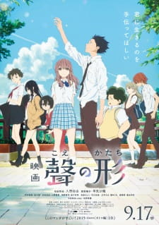
DRAMA2016 · Película
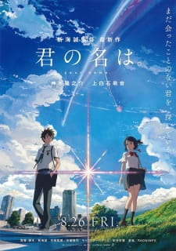
ROMANCE2016 · Película
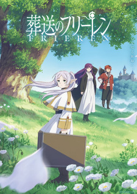
FANTASÍA2023 · 28 episodios
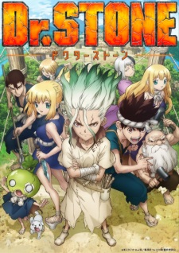
CIENCIA2019 · 24 episodios
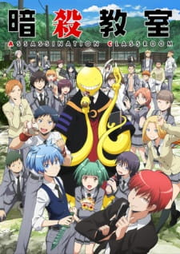
COMEDIA2015 · 22 episodios
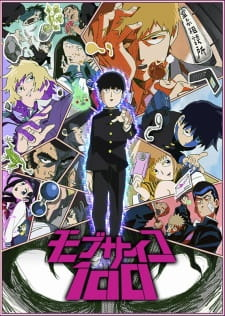
SOBRENATURAL2016 · 12 episodios
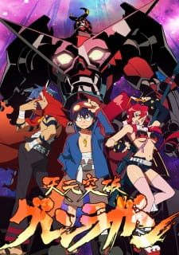
MECHA2007 · 27 episodios